Spider-Man (1990 - 1998)
| Comic Book | Release Date | Cover |
|---|---|---|
| Spider-Man #-1 Proto-Goblin | 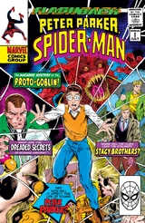 | |
| Spider-Man #1 Torment: Part 1 | 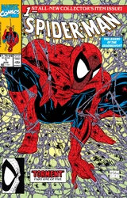 | |
| Spider-Man #2 Torment: Part 2 | 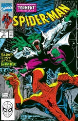 | |
| Spider-Man #3 Torment: Part 3 | 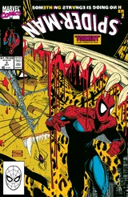 | |
| Spider-Man #4 Torment: Part 4 | 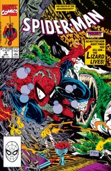 | |
| Spider-Man #5 Torment: Part 5 | 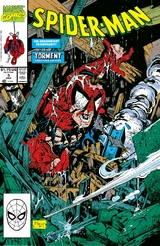 | |
| Spider-Man #6 Masques, Part 1 | 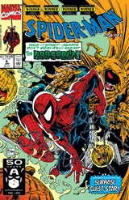 | |
| Spider-Man #7 Masques, Part 2 | 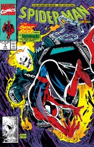 | |
| Spider-Man #8 Perceptions, Part 1 | 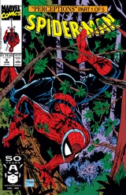 | |
| Spider-Man #9 Perceptions, Part 2 | 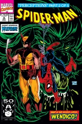 | |
| Spider-Man #10 Perceptions, Part 3 | 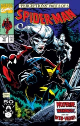 | |
| Spider-Man #11 Perceptions, Part 4 | 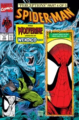 | |
| Spider-Man #12 Perceptions, Part 5 | 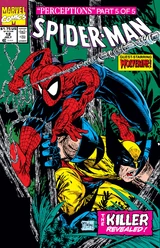 | |
| Spider-Man #13 Sub-City, Part 1 | 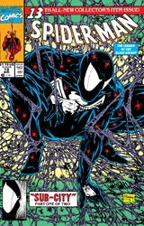 | |
| Spider-Man #14 Sub-City, Part 2 | 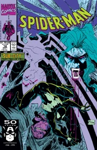 | |
| Spider-Man #15 The Mutant Factor! | 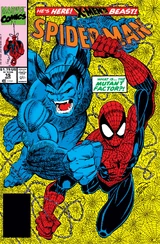 | |
| Spider-Man #16 Sabotage, Part 1 | 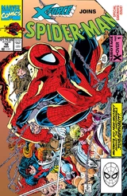 | |
| Spider-Man #17 No One Gets Outta Here Alive! | 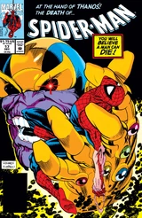 | |
| Spider-Man #18 Revenge of the Sinister Six, Part 1 | 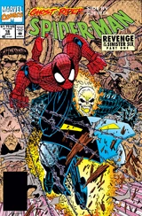 | |
| Spider-Man #19 Slugfest | 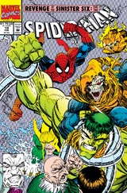 | |
| Spider-Man #20 Showdown | 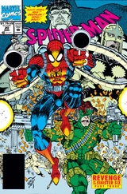 | |
| Spider-Man #21 Dealing Arms | 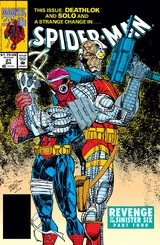 | |
| Spider-Man #22 The Sixth Member | 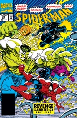 | |
| Spider-Man #23 Confrontation | 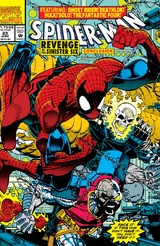 | |
| Spider-Man #24 Double Infinity | 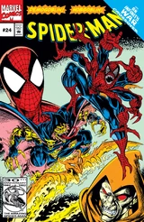 | |
| Spider-Man #25 Why Me? | 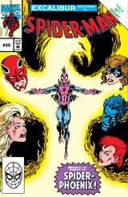 | |
| Spider-Man #26 With Great Responsibility--! | 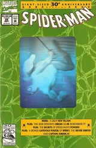 | |
| Spider-Man #27 There's Something about a Gun | 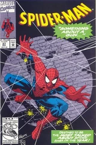 | |
| Spider-Man #28 Something about a Gun--Part 2 | 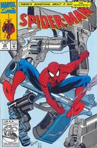 | |
| Spider-Man #29 Hope and Other Liars | 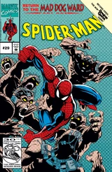 | |
| Spider-Man #30 Brainstorm! | 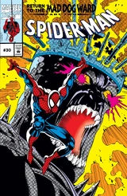 | |
| Spider-Man #31 Trust | 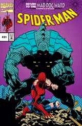 | |
| Spider-Man #32 Vengeance, Part One | 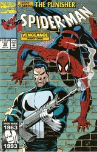 | |
| Spider-Man #33 Vengeance, Part Two | 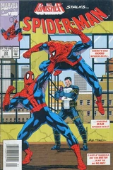 | |
| Spider-Man #34 Vengeance Is Mine | 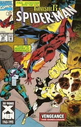 | |
| Spider-Man #35 Team Venom | 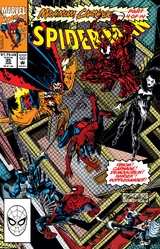 | |
| Spider-Man #36 Hate Is in the Air | 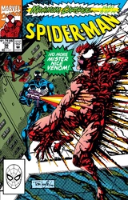 | |
| Spider-Man #37 The Light | 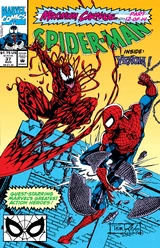 | |
| Spider-Man #38 Light the Night! | 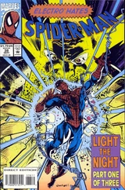 | |
| Spider-Man #39 Light the Night! Part Two | 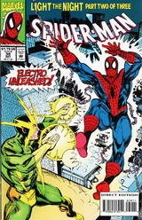 | |
| Spider-Man #40 Light the Night! Part Three | 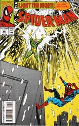 | |
| Spider-Man #41 Storm Warnings Part One | 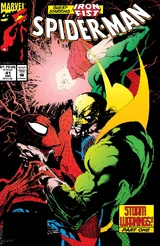 | |
| Spider-Man #42 Storm Warnings, Part 2: Lock and Load | 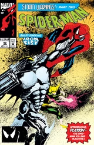 | |
| Spider-Man #43 Storm Warnings, Part 3: Media Blitz | 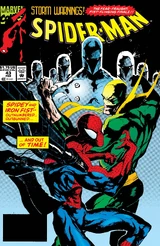 | |
| Spider-Man #44 The Anniversary Syndrome | 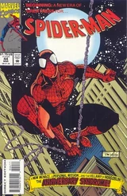 | |
| Spider-Man #45 The Dream Before | 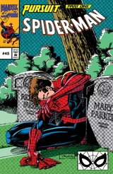 | |
| Spider-Man #46 Directions | 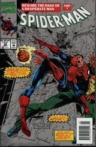 | |
| Spider-Man #47 Old Habits | 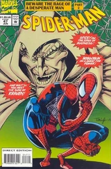 | |
| Spider-Man #48 Demons of Our Past | 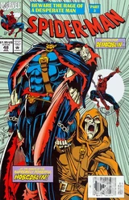 | |
| Spider-Man #49 Cold Hearts | 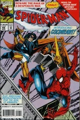 | |
| Spider-Man #50 Son of the Hunter | ||
| Spider-Man #51 Power and Responsibility - Part Three: A Heart Beat Away! | ||
| Spider-Man #52 Deadline | ||
| Spider-Man #53 Gathering Storms | ||
| Spider-Man #54 Snared | ||
| Spider-Man #55 End Hunt | ||
| Spider-Man #56 Truths & Deceptions | ||
| Spider-Man #57 Aftershocks, Part One | ||
| Spider-Man #58 Spider, Spider, Who's Got the Spider? | ||
| Spider-Man #59 Crossfire, Part Two: The Future is Now. | ||
| Spider-Man #60 The Truth is Out There! | ||
| Spider-Man #61 Heading Toward Ωmega | ||
| Spider-Man #62 Look Down | ||
| Spider-Man #63 The Kick Inside | ||
| Spider-Man #64 The Game Of Life | ||
| Spider-Man #65 Unplugged | ||
| Spider-Man #66 End Game | ||
| Spider-Man #67 Who Am I? | ||
| Spider-Man #68 Into The Depths | ||
| Spider-Man #69 It Begins With a Bang Not a Whimper! | ||
| Spider-Man #70 Above it All | ||
| Spider-Man #71 The Promise | ||
| Spider-Man #72 The World's Gone Mad! | ||
| Spider-Man #73 Legacy | ||
| Spider-Man #74 Last of the Heroes | ||
| Spider-Man #75 The Night of the Goblin! | ||
| Spider-Man #76 SHOC | ||
| Spider-Man #77 The Vampire's Kiss | ||
| Spider-Man #78 The Love of a Woman | ||
| Spider-Man #79 After the Fall | ||
| Spider-Man #80 Blood Simple | ||
| Spider-Man #81 Shadow of the Cat | ||
| Spider-Man #82 You've Got to Have Friends (of Humanity?) | ||
| Spider-Man #83 Vertigo | ||
| Spider-Man #84 Nothing Stops the Juggernaut! | ||
| Spider-Man #85 Little Lies | ||
| Spider-Man #86 The Span of Years | ||
| Spider-Man #87 Enemies ... A Love Story? | ||
| Spider-Man #88 Who Did Joey Z? | ||
| Spider-Man #89 Spider, Spider | ||
| Spider-Man #90 It Started on Yancy Street ... Again! | ||
| Spider-Man #91 Undercover | ||
| Spider-Man #92 Stuck in the Middle with You! | ||
| Spider-Man #93 Reborn Again | ||
| Spider-Man #94 Who Was Joey Z? | ||
| Spider-Man #95 Free Fall | ||
| Spider-Man #96 The Gathering of Five Part Three: Web of Despair | ||
| Spider-Man #97 The Final Chapter Part 2 of 4: Let the Heavens Tremble at the Power of the Goblin | ||
| Spider-Man #98 The Final Chapter Part 4 of 4: The Final Chapter | ||
| Spider-Man #½ Glory Days |